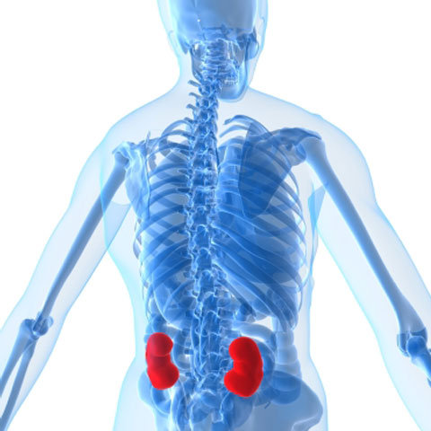
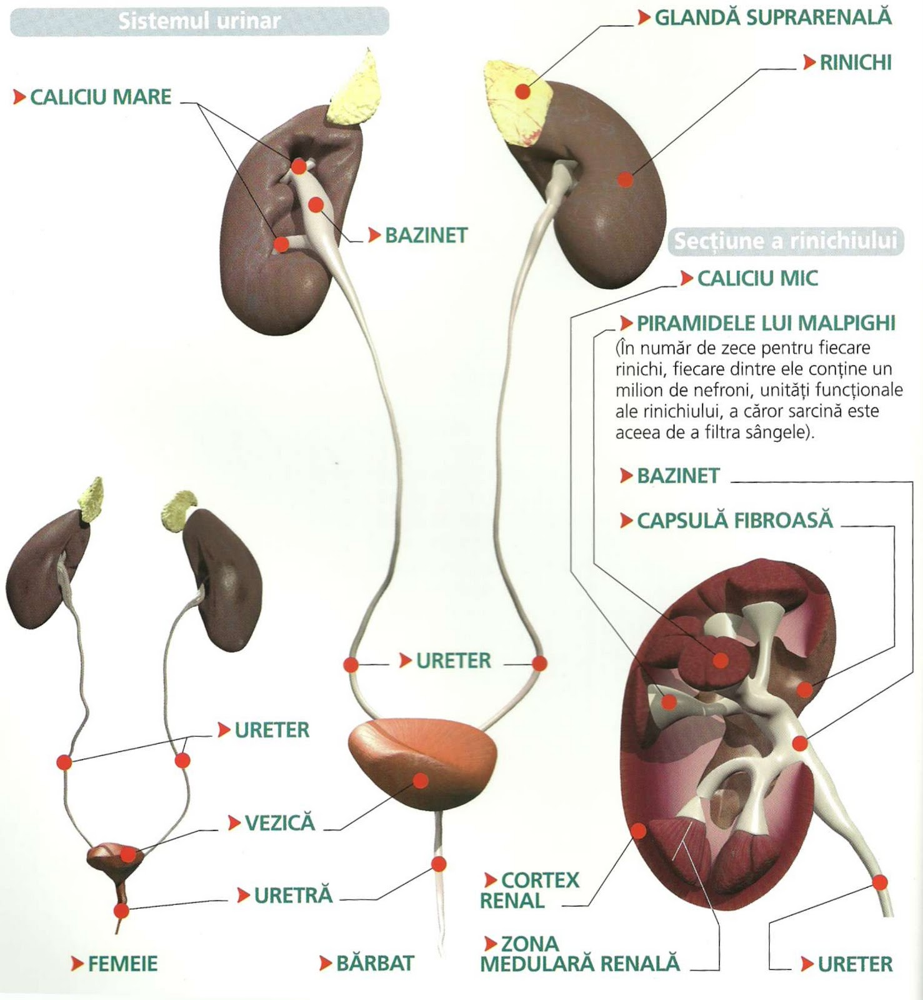
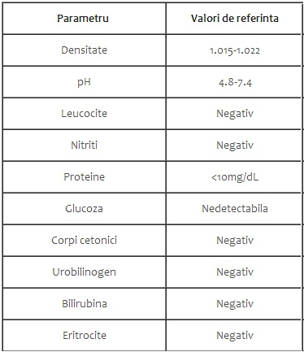
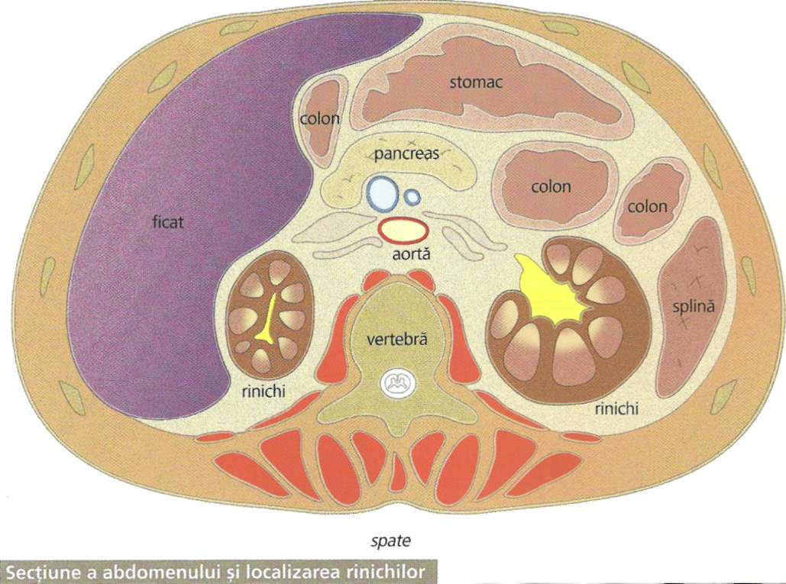

-
Bun venit pe site-ul nostru!
De cate ori nu v-ati pus intrebarea:-"Oare din ce este alcatuit corpul uman?"Iata ca a venit timpul sa aflati.
mai multe
Corpul uman este o suma a mai multor sisteme corporale care realizeaza functii specializate.Unele dintre aceste sisteme,cum ar fi cel nervos,muscular si osos se regasesc peste tot in interiorul corpului,in timp ce altele,precum sistemul digestiv,urinar sau endocrin sunt localizate in zone mai mici...Despre urinaPatologii asociate sistemului urinar:
1. Tulburari de mictiune
- polakiuria (cresterea numarului mictiunilor).Printre cele mai frecvente cauze : cistita acuta/ tuberculoasa, calculi vezicali, adenom de prostata, compresia vezicala.
- disuria (dificultatea actului mictional) . Exista disurie initiala (in adenom de prostata, carcinom de prostata), terminala (cistite, calculi vezicali) si totala (in mielita, uretrita, lueconevraxita) .
- mictiune dureroasa (durere si usturime la urinat) provocata de aceleasi cauze ca si in cazul disuriei.
- retentie urinara (incapacitatea vezicii urinare de a elimina urina) . Poate fi completa sau incompleta, de tip acut sau cronic.
- incontinenta urinara (pierderea functiei de rezervor a vezicii urinare) . Poate fi falsa (bolnavii cu retentie) sau adevarata (afectiuni medulare S3-S5 sau dupa interventii chirurgicale la nivelul prostatei).
- eurezis (pierdere involuntara de urina) la copii cu spina bifida.
- mictiune imperioasa (nevoia urgenta de a urina imediat dupa instalarea senzatiei de mictiune).Tenesmele vezicale apar in cistite, afectiuni uretra posterioara si sunt mictiuni imperioase, dureroase si ineficiente.
- mictiune rara (1-2 mictiuni pe parcursul unei zile).Apare cu oligurie in IRA si glomerulonefrita acuta.Cu diureza normala apare in megavezica congenitala sau dobandita.
2. Tulburari de diureza
- poliuria (cresterea diurezei peste 2 L pe parcursul a 24 ore).Aceasta poate fi fiziologica/ patologica, tranzitorie/permanenta. Cauzele pot fi renale sau extrarenale.
- oligouria (diureza are valori de 500-800 ml/24 ore).Poate fi fiziologica (reducere marcata a aportului de apa, transpiratii excesive) sau patologica de cauza prerenala (scadere filtrat glomerular ca reactie la hipotensiune sau soc hipovolemic) sau renala (glomerulonefrita acuta, insuficienta renala cronica).
- anuria (scadere diureza sub 300 ml/24 ore) . Este mereu patologica, poate fi reversibila (insuficienta renala acuta) sau ireversibila (stadiu final insuficienta renala cronica) . Cauze: functionale (hipovolemie, hipotensiune arteriala, acidoza) sau organice (glomerulonefrite, nefropatii).
- oligoanuria (diureza intre 500-300 ml/24 ore).
- nicturia (diureza nocturna e egala/ o depaseste pe cea diurna, fiziologic volumul diurezei nocturna reprezinta o patrime din cel al diurezei diurne. ) Cauze: insuficienta renala cronica compensata, insuficienta cardiaca dreapta sau globala, ciroza hepatica decompensata.
- opsiuria (eliminarea urinei intarziat fata de momentul ingestiei de lichide) . In mod normal lichidele sunt eliminate in decursul a patru ore de la ingestie. Cauze: ciroza decompensata, hiperestrogenism.
Sindroame renale:
1. Sindromul nefritic acut
2. Sindromul nefritic cronic
3. Sindromul nefrotic
4. Sindromul nefropatiilor interstitiale
5. Sindroame tubulare
6. Sindroame renale vasculare
7. Litiaza reno-urinara
8. Insuficienta renala acuta
9. Insuficienta renala cronica -
Introducere 
Toate sistemele corpului uman sunt alcatuite din organe specializate.Aceste organe sunt alcatuite din tesuturi,iar tesuturile la randul lor din alte miliarde de celule. Sistemul renal este alcatuit din rinichi si uretere (organe pereche) , vezica urinara si uretra (organe nepereche) .Rolul acestuia este de a mentine homeostazia mediului intern prin existenta unor procese fiziologice complexe de filtrare, absorbtie (activa si pasiva) si secretie. In urma acestor procese se formeaza urina prin intermediul careia sunt eliminati produsii reziduali ai metabolismului. Urina formata la nivel renal trece si prin uretere si ajunge la vezica urinara unde stationeaza pentru perioade scurte de timp, dupa care este eliminata prin uretra. Rinichii produc in medie pe minut aproximativ 125 ml de filtrat plasmatic. Din acestia 124 sunt reabsorbiti, iar 1 ml este eliminat prin urina. Diureza reprezinta cantitatea de urina excretata de rinichi in cursul unei zile si are o valoare de aproximativ 1500 ml. Un alt rol al rinichilor este in mentinerea echilibrului hidro-electrolitic si la reglarea tensiunii arteriale (prin intermediul reninei) . De asemenea, rinichii secreta eritropoetina care este factor de crestere care stimuleaza eritropoeza si hidroxileaza prohormonul steroidian precursor in forma activa a vitaminei D3.Experiment cistinaVIDEO:
Urina, cistina si cisteinaUrina
Urina este un lichid biologic de excretie, cu o compozitie chimica complexa, care poate suferi modificari in anumite stari patologice. Analiza completa de urina include determinarea caracterelor fizice (culoare, aspect, greutate specifica), chimice (pH, proteine, glucoza, corpi cetonici, hematii, bilirubina, urobilinogen, leucocite, nitriti) si examenul microscopic al sedimentului.

Valori de referinta ale urinei


Despre cistina si cisteina
Cistina este forma stabila a aminoacidului cu sulf numit cisteina - factor important in prevenirea imbatranirii precoce. Cele doua forme pot fi considerate in cadrul metabolismului ca un singur aminoacid, organismul transformandu-le rapid una in cealalta dupa necesitate.
Prin metabolizare,cistina elibereaza acid sulfuric,iar acesta reactioneaza alte substante,contribuind la detoxifierea organismului.Aminoacizii care contin sulf,in mod special cistina si metionina,s-au dovedit a fi protectori eficienti impotriva toxicitatii cuprului (o acumulare excesiva de cupru in corp constituie un simptom al bolii Wilson).
Cuplul cistina/cisteina poate de asemenea actiona ca agent protector impotriva efectelor daunatoare ale altor metale, precum si impotriva radicalilor liberi periculosi formati in organism.
Suplimente de cisteina (L-cistina) de trei ori pe zi, cu vitamina C (in raport de 1-3) este recomandabil fumatorilor si celor care consuma alcool (suplimentele nu trebuie luate pe stomacul gol).
Cercetari recente au demonstrat ca doze terapeutice de cisteina pot conferi o protectie importanta impotriva razelor X si a radiatiilor nucleare.
ATENTIE: Doze mari de cisteina/cistina nu sunt recomandabile persoanelor care sufera de diabet; pentru administrarea de suplimente necesita mai intai avizul unui medic. (combinarea acestor nutrienti poate inhiba efectul insulinei).Profesori coordonatori:-Daniela Bran
-Adriana FloareaAlte precizari:Va multumesc pentru timpul acordat!Realizator:-Bogdan Toma
Locatie:
CN "Alexandru Odobescu"PitestiAdresa: Strada Pescarilor, nr. 20, Pitesti, Judet Arges, Romania
Telefon: 0248/643202
E-mail: Colegiul OdobescuConfidentialitate
Drepturi de autor
Acest fisier este protejat partial de drepturi de autor, deoarece consta in informatii comune, insa are originalitate si autor.
mai multe
Toate sistemele corpului uman sunt alcatuite din organe specializate.Aceste organe sunt alcatuite din tesuturi,iar tesuturile la randul lor din alte miliarde de celule.Sistemul renal este alcatuit din rinichi si uretere (organe pereche) , vezica urinara si uretra (organe nepereche) .Rolul acestuia este de a mentine homeostazia mediului intern prin existenta unor procese fiziologice complexe de filtrare, absorbtie (activa si pasiva) si secretie. In urma acestor procese se formeaza urina prin intermediul careia sunt eliminati produsii reziduali ai metabolismului. Urina formata la nivel renal trece si prin uretere si ajunge la vezica urinara unde stationeaza pentru perioade scurte de timp, dupa care este eliminata prin uretra. Rinichii produc in medie pe minut aproximativ 125 ml de filtrat plasmatic. Din acestia 124 sunt reabsorbiti, iar 1 ml este eliminat prin urina. Diureza reprezinta cantitatea de urina excretata de rinichi in cursul unei zile si are o valoare de aproximativ 1500 ml. Un alt rol al rinichilor este in mentinerea echilibrului hidro-electrolitic si la reglarea tensiunii arteriale (prin intermediul reninei) . De asemenea, rinichii secreta eritropoetina care este factor de crestere care stimuleaza eritropoeza si hidroxileaza prohormonul steroidian precursor in forma activa a vitaminei D3.
Va vom prezenta sistemul renal:
1. RINICHII
Prezinta o margine concava catre medial (hilul renal unde se gasesc nervii, vasele sanguine, limfatice si ureterul) si o fata laterala convexa. Sunt localizati retroperitoneal, intinzandu-se aproximativ intre vertebrele T2-L3. Rinichiul stang este pozitionat de obicei superior de cel drept. Bazinetul renal este portiunea superioara dilatata a ureterului alcatuita din trei calice mari, fiecare din acestia ramificandu-se in mai multe calice mici.
Rinichiului i se descriu:- corticala renala situata la exterior;
- medulara renala la interior (contine piramide Malpighi si piramide Ferrein care patrund in corticala renala). Rinichiul are aproximativ 1-4 milioane de nefroni. Nefronul este considerat a fi unitatea morfo-functionala a rinichiului.
Nefronul este alcatuit din:
- corpuscul renal;
- tub contort proximal;
- ansa Henle
- tub contort distal;
- tubi colectori;
- ducte papilare.
Se diferentiaza nefronii:
- corticali (80-85%) cu ansa Henle scurta si corpusculul renal in corticala externa;
- juxtamedulari (15-20%) : ansa Henle este foarte lunga iar corpusculul renal se afla in corticala profunda.
Glomerulii renali filtreaza intr-o singura zi o cantitate de patru ori mai mare decat toata apa din organism, de 15 ori mai mult decat lichidele extracelulare si de 60 de ori mai mult decat volumul plasmatic.
2. URETERELE
Sunt doua la numar, au aspect tubular, o lungime de aproximativ 10-12 cm. Sunt situate retroperitoneal, intre pelvisul renal si vezica urinara,in care intra pe peretele posterior, oblic prin intermediul unei valve fiziologice. Trecerea urinei in vezica urinara se face in jeturi intermitente odata cu undele de contractie.
3. VEZICA URINARA
Este organ musculo-cavitar, cu mare plasticitate,al carui rol principal este de a depozita urina. Aceasta este alcatuita din corp si col.
4. URETRA
Este un conduct musculo-membranos care are ca rol principal transportul urinii din vezica urinara catre exterior. Exista o diferentiere pe sexe: la femeie,uretra are rol strict urinar,pe cand la barbat,aceasta asigura si transportul spermei. Uretra masculina este mai lunga si prezinta patru segemente: prostatic, membranos, bulbar si penian. Mucoasa din structura uretrei, in special a celei peniene, prezinta glande Littre (glande mucoase care se deschid la suprafata epiteliului mucoasei uretrale) . Uretra feminina este mai scurta (4-5 cm).In portiunea mijlocie a acesteia exista un sfincteruretral extern aflat sub control voluntar.
Organismul uman si compusii chimici organici
"Mens sana in corpore sano"-Juvenal